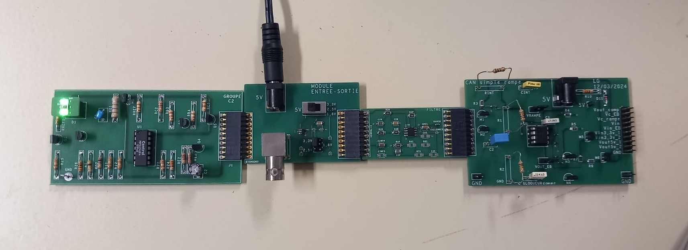
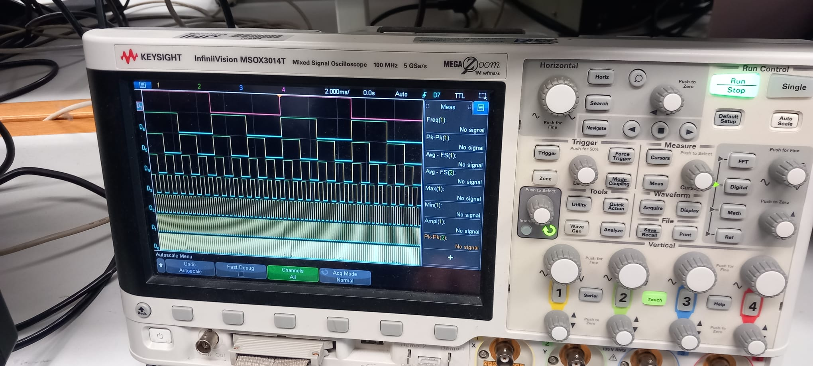
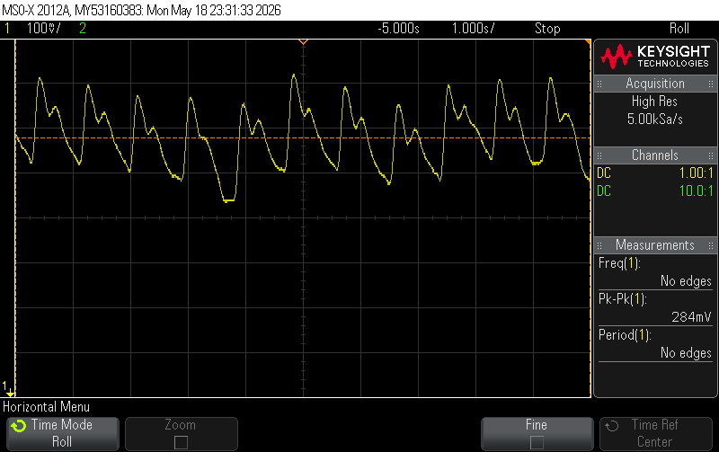
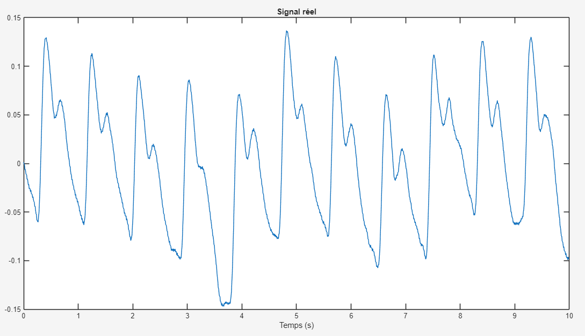
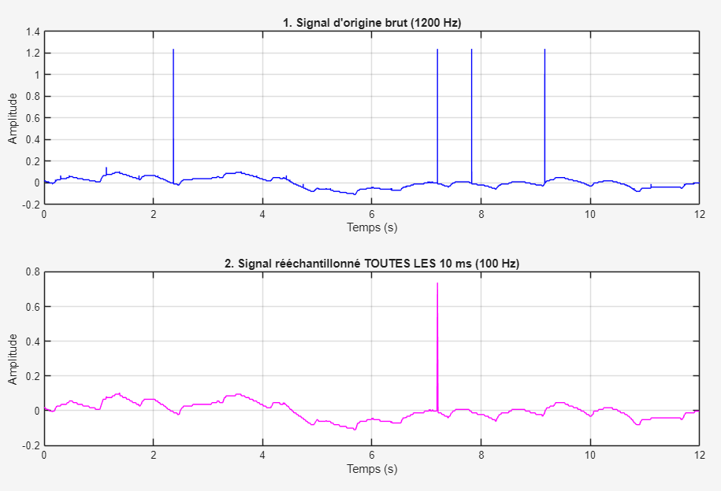

French Robotics Cup (2026 & 2027) & 7Robot Presidency
After joining ENSEEIHT’s robotics club 7Robot in my first year, I became President in May 2026, leading a team of ~20 active members, industrial partnerships (Elsys Design, Bootlin, Electroimpact, Dassault Systèmes), weekly SolidWorks & RP2040 training sessions, and the multi-year R2D2 × UNIVERSEH autonomous speaking robot project.
French Robotics Cup 2027 (In progress): Team leadership and full mechanical design of the main robot — T8 lead-screw elevator, pneumatic suction gripper, Venturi ejector, and solenoid valves.
R2D2 × UNIVERSEH (Sept 2026 – Present): Coordination of a multi-year life-size autonomous speaking R2D2 robot funded by UNIVERSEH and Toulouse INP.
7Robot team & robots at Stand N-07 — French Robotics CupLive match preparation on the French Robotics Cup main stage
French Robotics Cup 2027 · 7Robot · Work in Progress
Main Robot 2027 — Holonomic Chassis, T8 Elevator & Vacuum Gripper
As President of 7Robot and mechanical designer for the 2027 edition, I am currently designing and prototyping the main holonomic robot: a 3-wheel omnidirectional base with central LiDAR, a T8 lead-screw linear elevator with a rotating actuator hub, and a 3-level pneumatic suction-cup gripping system powered by compact integrated modules (4.5V mini pump, solenoid valve, and pressure sensor).
Project status: This robot is actively under development — the mechanical design is still being iterated and finalized, and the bench tests below use temporary test electronics and wiring that I put together so we can validate the mechanics while the electronics team completes the final custom PCBs.
Full SolidWorks 3D CAD assembly (holonomic base, LiDAR, T8 elevator & 3-level gripper)Top-down view — 3-wheel holonomic layout & game-element clearance
Multi-box vacuum lift & 180° rotation test on workbenchT8 lead-screw linear elevator & rotation hub bench test
French Robotics Cup 2026 · 7Robot · Sept 2025 – May 2026
“PAMI Ninja” — Autonomous Secondary Robot
As mechanical lead for our autonomous secondary robot (Petit Actionneur Mobile Indépendant), I designed the complete mechanical structure, the central rack-and-pinion linear elevator rail, and the dual vacuum suction gripper, working closely with the electronics and software teams to integrate our custom circular 7Robot PCB.
Competition Result: Qualified 8th out of 108 homologated teams (peak score of 124 points in a match) and reached the Round of 16.
Engineering Internship · LAERO / OMP / CNRS · June – July 2026
Multi-Sensor Environmental Measurement Platform
During my 8-week engineering internship at the Laboratoire d’Aérologie (LAERO — OMP / CNRS) in Toulouse, I developed an autonomous embedded environmental station designed for field atmospheric measurements.
Designed the schematic and routed a custom PCB in KiCad interfacing multiple environmental sensors (CO₂, barometer, GPS, radio/Bluetooth telemetry, microSD logging) with an Arduino Mega 2560 and dual DC/DC power stages (12V→5V and 5V→3.3V).
Implemented embedded acquisition firmware and validated power & sensor bring-up on the bench.
Modeled and 3D-printed the modular mechanical chassis in SolidWorks (with access hatch, pump mount, and thermal controller) and integrated the full system into a thermally insulated field enclosure.
As part of my Supervised Personal Work Project (TIPE) in classe préparatoire, I designed a physical Rubik’s Cube solver combining multi-language software, embedded power electronics, and custom mechanics:
Python: Graphical user interface (GUI) to input the initial color state of the cube.
OCaml: Algebraic data model of the cube and full Fridrich (CFOP) solving algorithm (Cross, F2L, OLL, PLL).
Arduino (C/C++) & Mechanics: Stepper motor control through power drivers (12V/24V), custom frame modeled in Fusion 360, and mechanically modified Rubik’s Cube shafts.
Result: Complete physical resolution of a scrambled Rubik’s Cube in 6 to 7 seconds.
In a team of four, we designed, routed, soldered, and experimentally validated a complete biomedical photoplethysmography (PPG) acquisition chain — the optical principle used in smartwatches to measure heart rate without an ECG.
Optical & Analog Front-End: LED emitter and photodiode receiver, custom-routed analog amplification PCB (gain 4.73 / 13.5 dB, buffer and differential pair), and analog filtering validated against circuit simulations.
Conversion & DSP: Sample-and-hold + single-slope ADC (CAN simple rampe) interfaced with an FPGA and Arduino, followed by digital signal processing in MATLAB/Python (resampling, heart rate extraction, pulse wave velocity, and vascular age estimation).

Complete assembled PCB chain (left to right): Optical sensor & amplifier → I/O module → Analog filter → Single-slope ADC
PCB layout & routing of the analog amplifier stageHardware test bench — FPGA, Arduino & single-slope ADC board

Keysight MSOX3014T — 8-bit digital logic capture (D0–D7)Live oscilloscope validation of the single-slope ADC
Signal Acquisition & Digital Signal Processing (MATLAB)
From the live analog optical waveform captured on a Keysight oscilloscope (284 mVpp with visible systolic peaks and dicrotic notches), we processed the digitized signal in MATLAB: resampling from 1200 Hz to 100 Hz (10 ms), Butterworth low-pass (5.0 Hz) and band-pass (0.5–5.0 Hz) filtering to remove spikes and baseline drift, and spectral heart-rate extraction via periodogram (1.206 Hz ≈ 72.4 BPM).

Live analog PPG waveform on Keysight MSO-X 2012A (284 mVpp, 5 kSa/s)

Raw acquired PPG signal in MATLAB (10 s window)Filtered PPG signal (clean periodic heartbeats, baseline drift removed)

Resampling from 1200 Hz raw acquisition to 100 Hz (10 ms)5.0 Hz Butterworth low-pass filter (spike & high-frequency noise removal)0.5 – 5.0 Hz Butterworth band-pass filter (stable cardiac band)
Periodogram of the filtered PPG signal — dominant heart-rate peak at 1.206 Hz (~72.4 BPM)
Analog ElectronicsPCB RoutingSingle-Slope ADCFPGA / ArduinoOscilloscope ValidationMATLAB / Python DSP
5th Semester · ENSEEIHT
“Snake” Game in C
To master the C programming language, we were offered a project: coding the "snake" game in C with CodeBlocks.